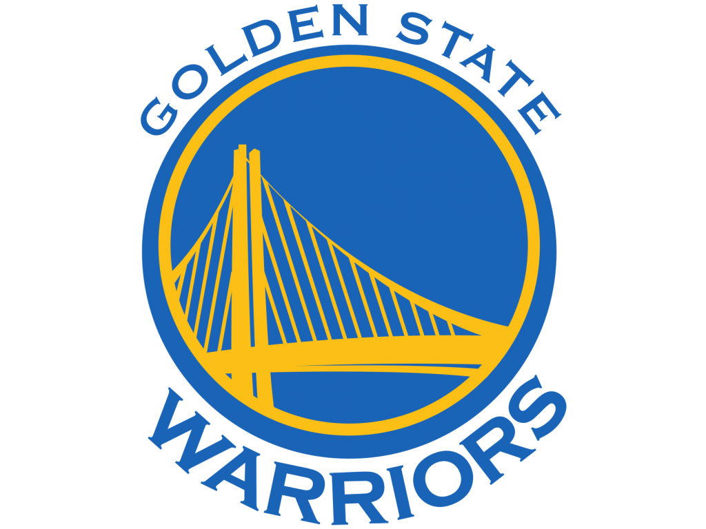
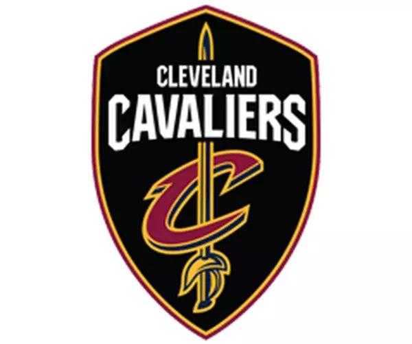
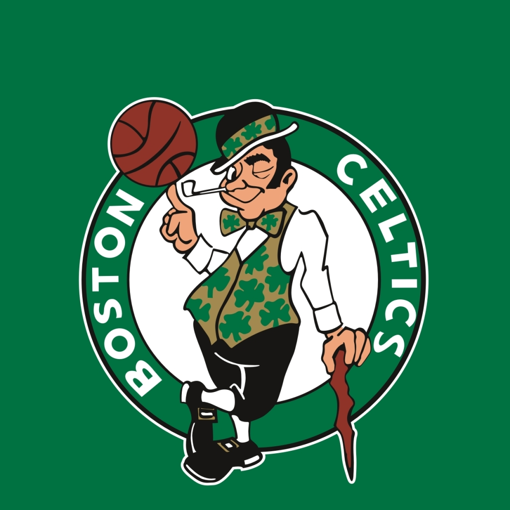
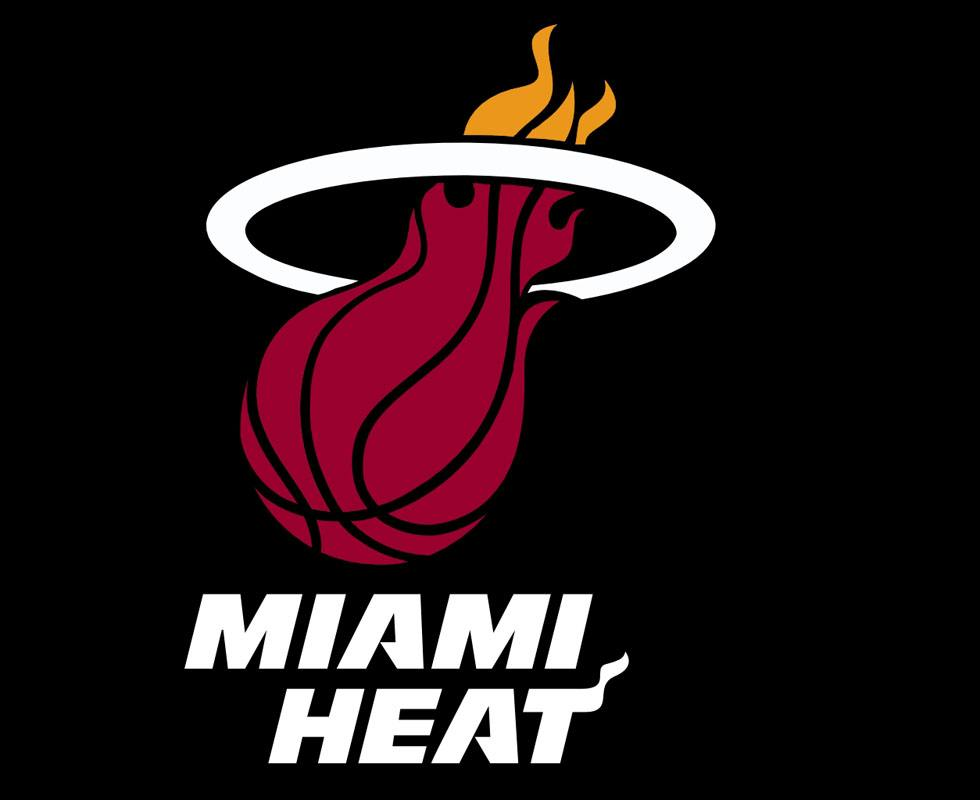

勇士
金州勇士队（Golden State Warriors） [1] 于1946年成立并加盟BAA（1949年加盟NBA），是一支属于美国的加利福尼亚州奥克兰市（Oakland, California）的职业篮球队，是美国男篮职业联赛（NBA）西部联盟太平洋赛区的一部分。
骑士
克利夫兰骑士队（Cleveland Cavaliers），是一支属于美国的俄亥俄州克利夫兰（Ohio,Cleveland）的职业篮球队，是美国男篮职业联赛（NBA）东部联盟中部赛区的一部分。
凯尔特人
波士顿凯尔特人队是一支位于美国马萨诸塞州波士顿的职业篮球队，1947年成立，1949年成为美国男篮职业联赛（NBA）创始球队之一。现从属于NBA东部联盟的大西洋赛区。
老鹰
亚特兰大老鹰队是一支所属于美国乔治亚州亚特兰大的职业篮球队，成立于1946年，于1949年加入美国男篮职业联赛（NBA），是NBA东部联盟东南赛区的一部分。
热火
迈阿密热火队（Miami Heat），于1988年成立并加入NBA，是一支属于美国佛罗里达州迈阿密市的职业篮球队，是美国男篮职业联赛（NBA）东部联盟东南赛区的一部分。迈阿密热火队热火主场设在迈阿密市中心的美航中心球馆。热火队与夏洛特黄蜂队同时成立于1988年NBA，是代表佛罗里达州的两支NBA球队之一（另一支为奥兰多魔术队）
